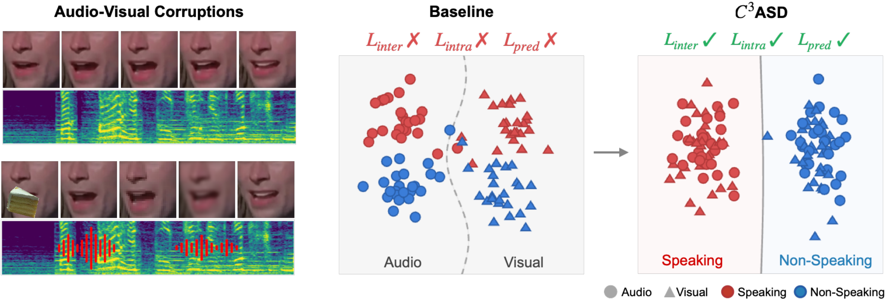
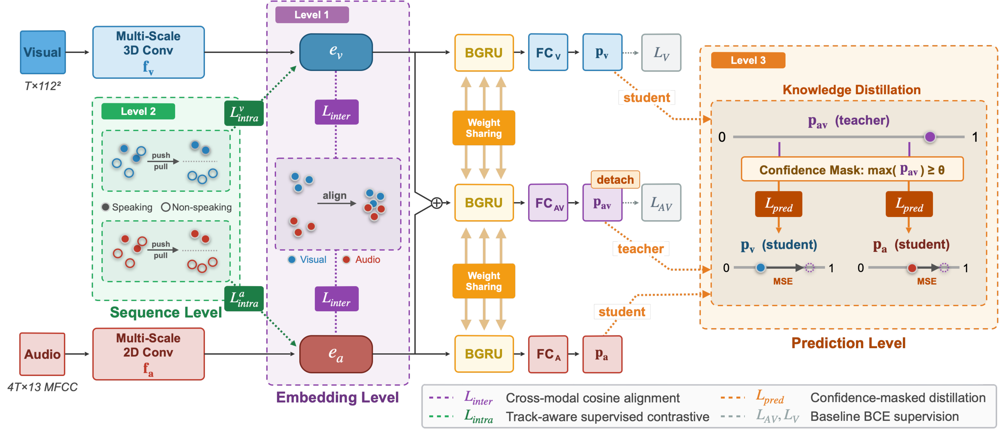

Multi-level consistency constraints for audio-visual active speaker detection under real-world corruption.
¹Chung-Ang University, Seoul, Republic of Korea
* Equal contribution.

Abstract
Active Speaker Detection determines whether a visible person in a video is speaking at each moment. While recent audio–visual fusion methods perform well on clean data, they degrade under real-world corruptions such as background noise, occlusion, or simultaneous modality degradation.
We attribute this to the absence of explicit consistency constraints that align representations across modalities. Without such constraints, models rely on modality-specific shortcuts that fail under corruption. We propose C³ASD, a multi-level consistency-driven framework with three complementary constraints: embedding-level inter-modality consistency aligns audio–visual representations during speech; sequence-level intra-modality consistency separates speaking and non-speaking clusters via track-aware contrastive learning; and prediction-level consistency stabilizes fusion through knowledge distillation. Experiments show consistent improvements under audio, visual, and joint corruptions, while maintaining performance on clean data.
Method
Built on Light-ASD, C³ASD keeps the two-stream encoder and BGRU classifier unchanged and adds three consistency signals at the embedding and prediction levels. No external data or architectural changes are required, and no learnable parameters are introduced beyond a single audio-only classification head.

Demo videos
COCO-patch occlusion (top-right) + MUSAN babble noise applied simultaneously.
Off-screen speech and multi-speaker settings, evaluated without fine-tuning.
🟩 Active speaker (green) / 🟥 Non-speaker (red)
Results · Audio–Visual joint corruption
Joint corruption degrades both streams at once. All corruption is applied only at test time; no corrupted samples are used during training. Results on the AVA-ActiveSpeaker validation set (mAP %).
Table 6: Object occlusion + noise (MUSAN)
| Method | B −10 | B −5 | B 0 | B 5 | B 10 | B AVG | M −10 | M −5 | M 0 | M 5 | M 10 | M AVG | N −10 | N −5 | N 0 | N 5 | N 10 | N AVG |
|---|---|---|---|---|---|---|---|---|---|---|---|---|---|---|---|---|---|---|
| TalkNet | 53.7 | 58.8 | 63.1 | 66.3 | 68.1 | 62.0 | 53.8 | 59.3 | 64.0 | 67.2 | 69.1 | 62.7 | 54.1 | 59.3 | 63.7 | 66.8 | 68.9 | 62.6 |
| ADENet | 55.8 | 59.1 | 61.0 | 62.7 | 64.7 | 60.7 | 52.8 | 56.4 | 59.1 | 62.2 | 64.6 | 59.0 | 54.6 | 57.5 | 59.7 | 62.0 | 64.2 | 59.6 |
| Light-ASD | 65.7 | 69.4 | 72.7 | 75.1 | 76.3 | 71.9 | 64.8 | 68.9 | 72.6 | 75.0 | 76.3 | 71.5 | 65.1 | 68.8 | 72.2 | 74.4 | 75.8 | 71.3 |
| Ours | 66.6 | 70.2 | 73.7 | 76.3 | 77.8 | 72.9 | 65.8 | 69.6 | 73.4 | 76.1 | 77.6 | 72.5 | 66.6 | 70.4 | 73.8 | 76.1 | 77.6 | 73.0 |
Table 6: Pixelated face (MUSAN)
| Method | B −10 | B −5 | B 0 | B 5 | B 10 | B AVG | M −10 | M −5 | M 0 | M 5 | M 10 | M AVG | N −10 | N −5 | N 0 | N 5 | N 10 | N AVG |
|---|---|---|---|---|---|---|---|---|---|---|---|---|---|---|---|---|---|---|
| TalkNet | 85.0 | 87.4 | 89.1 | 90.3 | 91.1 | 88.6 | 83.9 | 86.2 | 88.2 | 89.8 | 90.8 | 87.8 | 84.9 | 87.2 | 88.9 | 90.1 | 90.9 | 88.4 |
| ADENet | 84.1 | 85.9 | 86.8 | 87.3 | 88.2 | 86.5 | 82.2 | 84.2 | 85.7 | 87.2 | 88.3 | 85.5 | 83.2 | 85.0 | 86.2 | 87.3 | 88.2 | 86.0 |
| Light-ASD | 87.5 | 89.2 | 90.5 | 91.5 | 92.1 | 90.2 | 86.0 | 87.9 | 89.6 | 90.9 | 91.8 | 89.3 | 86.9 | 88.7 | 90.1 | 91.2 | 91.9 | 89.8 |
| Ours | 87.9 | 89.6 | 90.9 | 91.9 | 92.5 | 90.6 | 86.7 | 88.6 | 90.2 | 91.5 | 92.4 | 89.9 | 87.7 | 89.4 | 90.8 | 91.8 | 92.4 | 90.4 |
Under object occlusion, C³ASD improves average mAP by +1.23% over Light-ASD, with the largest gains at the most severe −10 dB SNR.
Table 7: Joint corruption on DEMAND (8 environments)
| Method | Object occlusion + noise | Pixelated face | ||||||||||||||||
|---|---|---|---|---|---|---|---|---|---|---|---|---|---|---|---|---|---|---|
| PARK | RIVER | CAFE | REST | CAFET | METRO | STATION | MEET | AVG | PARK | RIVER | CAFE | REST | CAFET | METRO | STATION | MEET | AVG | |
| TalkNet | 67.5 | 63.0 | 60.4 | 57.6 | 60.4 | 69.0 | 63.9 | 59.1 | 62.6 | 90.0 | 89.0 | 86.6 | 86.1 | 86.6 | 90.8 | 89.4 | 85.4 | 88.0 |
| ADENet | 66.2 | 61.8 | 61.1 | 59.0 | 61.1 | 66.0 | 62.3 | 60.0 | 62.2 | 88.8 | 87.2 | 85.0 | 84.5 | 85.0 | 89.0 | 87.5 | 83.6 | 86.3 |
| Light-ASD | 76.0 | 69.7 | 71.7 | 68.8 | 71.7 | 75.4 | 70.3 | 68.4 | 71.5 | 91.5 | 90.3 | 88.4 | 88.1 | 88.4 | 92.0 | 90.5 | 86.7 | 89.5 |
| Ours | 76.1 | 71.2 | 71.8 | 70.0 | 71.8 | 76.6 | 72.4 | 70.1 | 72.5 | 92.0 | 90.8 | 89.1 | 88.9 | 89.1 | 92.3 | 91.0 | 88.3 | 90.2 |
On DEMAND, C³ASD gains +1.0% average mAP under object occlusion and +0.7% under pixelation across all eight environments.
Results · Single-modality & generalization
| Method | Object Occ. + Noise | Pixelated | WASD (in-the-wild) |
|---|---|---|---|
| TalkNet | 70.73 | 92.12 | 78.4 |
| ADENet | 66.36 | 89.04 | 85.6 |
| Light-ASD | 76.86 | 93.15 | 85.3 |
| Ours | 78.90 (+2.04) | 93.47 | 86.1 |
Under visual-only object occlusion, inter-modality alignment allows the clean audio stream to compensate for degraded video (+2.04%). On WASD, C³ASD generalizes to a different dataset without fine-tuning.
Ablation · Joint audio–visual corruption
We ablate each consistency loss under simultaneous audio-visual corruption on the eight DEMAND environments (mAP %). Each constraint improves over the unregularized baseline (82.27), and combining all three reaches the best average of 90.19.
Table A.2: Ablation under joint audio-visual corruption (mAP %)
| Inter | Intra | Pred | Park | Cafe | Metro | River | Rest. | Cafeter. | Pub.Sta. | Meet. | Avg |
|---|---|---|---|---|---|---|---|---|---|---|---|
| ✗ | ✗ | ✗ | 85.09 | 80.50 | 85.86 | 83.62 | 79.94 | 80.50 | 83.83 | 78.85 | 82.27 |
| ✓ | ✗ | ✗ | 91.57 | 88.53 | 92.00 | 90.20 | 88.29 | 88.53 | 90.61 | 87.63 | 89.67 |
| ✗ | ✓ | ✗ | 91.78 | 88.54 | 92.31 | 90.79 | 88.26 | 88.54 | 90.89 | 87.67 | 89.85 |
| ✗ | ✗ | ✓ | 91.66 | 88.68 | 92.01 | 90.61 | 88.42 | 88.68 | 90.67 | 87.69 | 89.96 |
| ✓ | ✓ | ✗ | 91.37 | 88.13 | 91.75 | 90.43 | 88.17 | 88.13 | 90.51 | 87.36 | 89.48 |
| ✓ | ✗ | ✓ | 92.07 | 89.08 | 92.29 | 90.67 | 88.62 | 89.08 | 90.78 | 88.14 | 90.09 |
| ✗ | ✓ | ✓ | 91.66 | 88.68 | 92.01 | 90.61 | 88.42 | 88.68 | 90.67 | 87.69 | 89.96 |
| ✓ | ✓ | ✓ | 92.00 | 89.11 | 92.28 | 90.79 | 88.91 | 89.11 | 91.03 | 88.30 | 90.19 |
Each loss individually improves the baseline by roughly +7-8% average mAP. The full combination (✓✓✓) reaches 90.19, a +7.92% gain over the unregularized model.